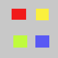
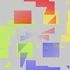

With this filter, your image (active layer or selection) looks like a kaleidoscope. This filter duplicates your image in many copies, more or less dimmed and split, and puts them around the center of the image.

- Presets, “Input Type”, Clipping, Blending Options, Preview, Merge filter, Split view
-
![[Note]](images/note.png)
Note These options are described in Section 2, “Common Features”.
- Division
-
That's the number of copies you want to apply to image. This value varies from -32 to 64. Negative values invert kaleidoscope rotation.
- Illusion type
-
You have two arrangement types for copies in image:
Figure 17.303. From left to right: original image, Type 1, Type 2, with Divisions=4

